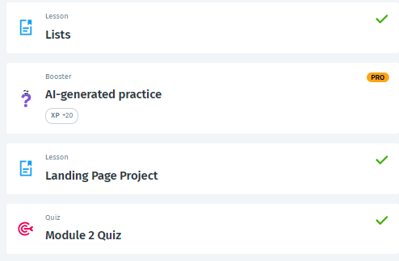

<!--1)შექმენით ორი სია 10-10 ცხოველზე ერთში გამოიყენეთ ul და ol ხოლო მეორეში ul და li.  -->

<a href="Animal.html">Animal</a>

<!-- 2)შექმენით ორი სხვადასხვა სია სადაც დაამატებთ 2 სხვადასხვა სურათს და 2 სხვადასხვა ლინკს. -->

<br><a href="list1.html">List1</a>

<!-- 3)შექმენით სია სადაც დაწერთ თქვენს შესახებ ინფორმაციას მაგ: თქვენი ტოპ 3 კერძი , 
ტოპ 5 ქვეყანა და ასე შემდეგ.(სია უნდა შეიცავდეს მინიმუმ 10 ელემენტს) -->

<br><a href="MyTop3.html">List2</a>

<!-- 4)სოლოლერნი Module 2 Quiz-ის ჩათვლით -->

<br>
